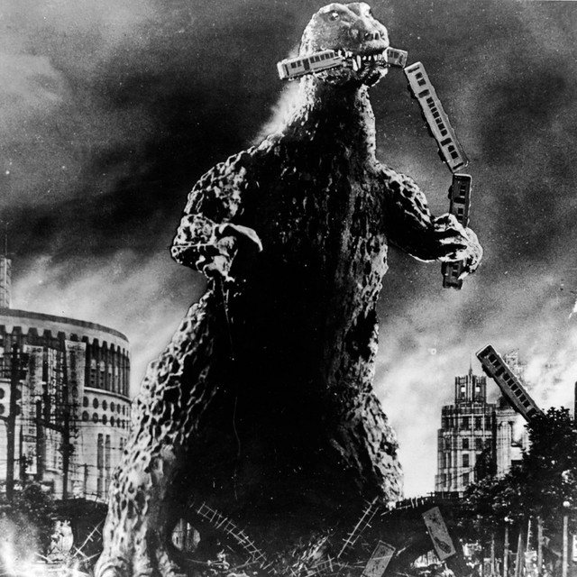
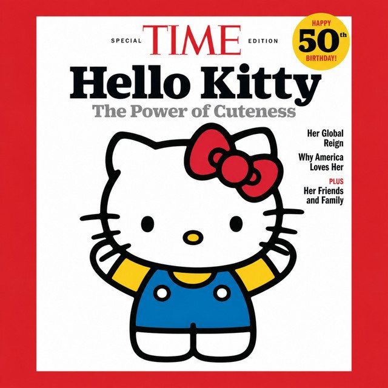

The Eclectic Polymath Podcast · Archive
#252 Godzilla: The Monster Japan Built to Carry Its Grief

About this episode
On November 3, 1954, Japanese audiences filed into theaters to watch a monster destroy Tokyo. Gojira was not escapism. It arrived nine years after Hiroshima and Nagasaki, two years after an Allied occupation that had forbidden the country to speak publicly about the atomic bombings, and eight months after an American hydrogen bomb test irradiated the crew of the fishing boat Lucky Dragon No. 5. This episode tells the story of what Godzilla actually is: not a movie monster later read as a metaphor, but a nation's grief given a body.
Key points
- On November 3, 1954, Japanese audiences filed into theaters to watch a monster destroy Tokyo.
- It arrived nine years after Hiroshima and Nagasaki, two years after an Allied occupation that had forbidden the country to speak publicly about the atomic bombings, and eight months after an American hydrogen bomb test irradiated the crew of the fishing boat Lucky Dragon No. 5.
- This episode tells the story of what Godzilla actually is: not a movie monster later read as a metaphor, but a nation's grief given a body.
- We look at Shin Godzilla's bureaucracy-as-disaster, at Godzilla Minus One and director Takashi Yamazaki, at how the 1956 American recut edited the grief out for US audiences, and at the distinctly Japanese form underneath it all
- On November 3, 2026, the franchise's newest sequel opened in Japan to the biggest live-action opening day in the country's box office history.
More like this
 #251 Arnold Schwarzenegger: The Recall That Invented the Celebrity CandidateNovember 7, 202656:27#217 A Different World: The Sitcom That Refused to EndOctober 16, 202651:08#204 Symbiopsychotaxiplasm: The Film That Watched ItselfOctober 11, 202645:01
#251 Arnold Schwarzenegger: The Recall That Invented the Celebrity CandidateNovember 7, 202656:27#217 A Different World: The Sitcom That Refused to EndOctober 16, 202651:08#204 Symbiopsychotaxiplasm: The Film That Watched ItselfOctober 11, 202645:01
#180 Hello Kitty: The Strange Power of CutenessSeptember 27, 20261:07:30